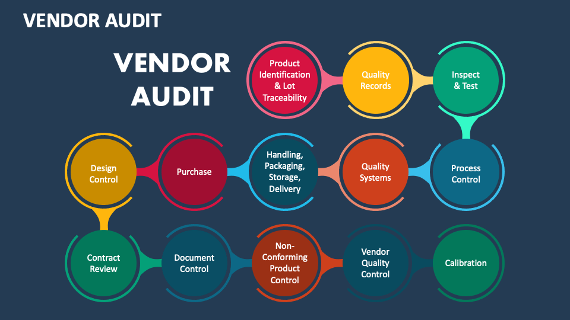
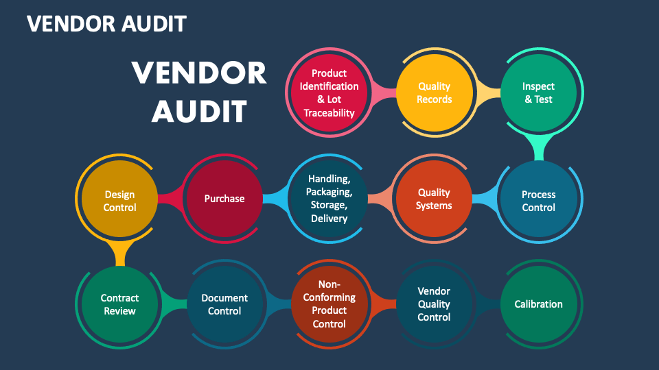
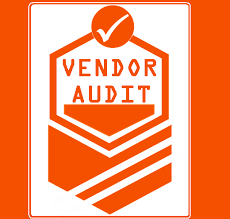
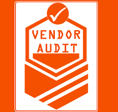

Vendor Audit Guidelines
What is a Vendor Audit?
A vendor audit is a process employed by organisations to assess a third-party entity contracted by the organisation. This audit can inspect various aspects, including the organisation's quality control, cost-effectiveness, cybersecurity measures, and other relevant factors.
In today’s world of privacy, businesses are increasingly focusing on third-party vendor risk management. The prominence of issues like the Cambridge Analytica scandal has brought third-party data sharing to the forefront for regulators and the media. Organisations that solely scrutinise their own practices without evaluating the data practices of their vendors are overlooking an important area of concern.
Advantages of Vendor Audit
The major advantages of Vendor audit are:
- Increased Process Transparency: These audits provide a clear view of processes, promoting transparency in vendor operations.
- Better Cost Control: By identifying inefficiencies and areas for improvement, these audits contribute to more effective cost management.
- Enhanced Business ROI: The insights gained from vendor audits enable businesses to optimise their return on investment through improved vendor relationships and processes.
- Ensure Compliance in Vendor Operations and Output: These audits help ensure that vendors adhere to regulatory requirements, mitigating compliance risks.
- Strengthens Relationships Between Vendor and Client: Regular audits promote stronger partnerships by addressing issues proactively and promoting mutual understanding.
- Secure and Easy Document and Data Storage: Vendor audits contribute to organised and secure storage of important documents and data, ensuring easy accessibility.
- Automation of Redundant Tasks: Implementation of audit findings can lead to the automation of repetitive tasks, enhancing efficiency.
- Deeper Vendor Analytics for Greater Service Operations: Analysis provided by audits allows businesses to optimise vendor performance for better service operations.
- Efficient Risk Management: Vendor audits help identify and manage potential risks associated with vendor relationships and operations.
- Optimise Quality Checks and Audit Trails: The audit process allows for the optimisation of quality checks and the establishment of robust audit trails.
- Tracking Payments and Reimbursements: Vendor audits aid in monitoring financial transactions, ensuring accurate tracking of payments and reimbursements.
- Time Savings: Simplified processes resulting from audits contribute to time savings for both vendors and clients.
- Familiar Interface: Standardising processes through audits creates a consistent and familiar interface for better communication and collaboration.
- Less Risk: Proactive identification and mitigation of risks contribute to a reduced overall risk in vendor relationships.
- Less Administration and Meetings: Efficient vendor management, as facilitated by audits, leads to reduced administrative tasks and the need for fewer meetings.
- One Support Desk: Consolidating support through a single desk simplifies communication and issue resolution.
- Quality and Performance: Vendor audits contribute to overall improvements in quality and performance, aligning vendors with the client's expectations and standards.
Understanding Vendor Lifecycle Management
Vendor Lifecycle Management (VLM) is a strategic and systematic approach to overseeing the entire relationship between a company and its vendors. Traditionally, VLM includes five primary categories that in vendor-client relationship. These categories are:
- Qualifying: Involves the initial assessment and selection of vendors based on predefined criteria, including capabilities, reputation, and compliance.
- Engagement: Focuses on establishing clear expectations, terms, and conditions between the vendor and the company, ensuring alignment with business objectives.
- Managing Delivery: Includes the ongoing monitoring and evaluation of vendor performance to ensure the timely and quality delivery of goods or services.
- Managing Finances: Involves the financial aspects of the vendor relationship, including invoicing, payment terms, and cost management.
- Relationship Termination: Addresses the end of the vendor relationship, outlining procedures for a smooth transition or termination based on predefined criteria.
- Information Security Management:Recognising the increasing threats, companies must integrate information security considerations throughout the entire vendor life cycle. While due diligence during the qualification step incorporates information security management, the evolving nature of threats necessitates a continuous review of information security measures at every stage of the vendor relationship.
For instance, data breaches may occur not only during the engagement phase but also during delivery, financial transactions, and even after the relationship termination. Therefore, organisations need to adopt a holistic approach, implementing strong information security protocols that persistently safeguard sensitive data and mitigate risks across all phases of the vendor lifecycle. This ensures a comprehensive and adaptive Vendor Lifecycle Management strategy in the face of evolving cybersecurity challenges.
Components of the Vendor Audit Process
The vendor management audit process is a complex examination that involves various methods to assess a third-party's adherence to standards, regulations, and contractual agreements. The process includes the following components:
- Review of Books and Records:
- Evaluation of the third-party's financial and operational records to ensure accuracy and compliance with relevant regulations.
- Data Analysis on Transactions and Records:
- Utilisation of data analysis techniques to scrutinise transactions and records, identifying patterns, anomalies, and potential areas of concern.
- Sampling of High-Risk Transactions:
- Selection and examination of a representative sample of high-risk transactions to assess the effectiveness of controls and identify potential issues.
- Phone or Interviews:
- Conducting interviews with third-party personnel, either through phone calls or direct interactions, to gather knowledge and verify compliance.
- Vendor Questionnaires:
- Distribution of structured questionnaires to gather detailed information from the vendor regarding processes, controls, and adherence to contractual obligations.
- Site Visits:
- Physical inspections of the vendor's facilities to verify operational practices, quality standards, and overall compliance with agreed-upon terms.
- Review of Contracts, Policies, and Documents:
- Examination of contractual agreements, policies, and other relevant documents to ensure alignment with regulatory requirements and the client's expectations.
- Documentation of Findings:
- Thorough documentation of audit findings, highlighting areas of compliance, non-compliance, and potential improvement opportunities.
- Correction Plans:
- Development of corrective action plans in collaboration with the vendor to address identified issues, enhance compliance, and improve overall performance.
 

Steps in Vendor Management Audit
Successful vendor management audits are essential for ensuring the integrity, compliance, and effectiveness of relationships with external partners. The audit process involves several important steps to comprehensively evaluate vendors and mitigate risks.
- Internal audit managers initiate the process by creating a clear audit trail, outlining the scope, objectives, and methodology of the audit. This foundational step sets the groundwork for a systematic examination of vendor activities.
- The operating model, or documents guiding the audit process, includes vendor categorisation and concentration based on a risk assessment. An approved methodology is employed to identify and prioritise risks associated with each vendor, guiding the audit focus.
- Organisations conduct ongoing governance through vendor report reviews. This involves monitoring and assessing vendor performance throughout the entire lifecycle. It ensures that vendors adhere to agreed-upon standards and contractual obligations.
- Not every vendor may require a detailed audit. Resources and risk considerations play a role in selecting vendors for comprehensive audits. Establishing an auditing team and addressing knowledge gaps through training are important preparatory steps.
- Assess the vendor's quality statement and quality assurance system.
- Understand the organisation of their system and how quality assurance is implemented.
- Evaluate the alignment of their organisational structure with the needs of the business.
- Identify the individuals with overall control and authority to address non-conformities.
- Inquire about the number of complaints, their follow-up procedures, and resolution.
- Schedule an appointment with the vendor, ensuring the presence of key personnel during the audit.
- Agree on the inspection standard, considering the acceptability of the vendor's quality assurance plans.
- Assess whether the vendor adheres to their self-established benchmarks.
- Conduct a detailed and precise inspection based on agreed-upon standards.
- Utilise checklists to guide the assessment, covering specific areas of interest.
- For larger operations, involve multiple team members to efficiently review allocated tasks.
- Auditors convey their findings to the organisation, either verbally or through a written report.
- Senior managers analyse audit results and develop strategies to address identified non-conformities.
- Arrange follow-up meetings to allow both parties to discuss views and agree on timelines for corrective actions.
- Prioritise urgent items and ensure a comprehensive resolution of identified issues.
What is vendor life cycle management.
Vendor Lifecycle Management is a strategic approach that oversees the entire relationship between a company and its vendors. It involves stages such as vendor qualification, engagement, managing delivery, managing finances, relationship termination, and information security management.
How do experts conduct a vendor management audit.
To conduct a vendor management audit, Consultant begins by establishing an audit trail, categorise vendors based on risk assessment, reviews vendor reports for ongoing governance, chooses vendors for audit based on risk and resources, visits vendors, inspects their premises, and closes the audit by conveying findings and developing corrective action plans.
What are the components of a vendor management audit.
A vendor management audit process typically includes reviewing books and records, conducting data analysis on transactions, sampling high-risk transactions, interviews with vendor personnel, distributing vendor questionnaires, site visits, reviewing contracts and policies, documenting findings, and developing correction plans.
Why is Information Security Management being important in vendor management audit
Information Security Management is important in vendor management audits due to the increasing risk of data breaches. Vendors must be continuously assessed for information security measures throughout their lifecycle, not just during the qualification phase, to ensure comprehensive protection against evolving threats.
What is the purpose of Vendor categorisation in vendor management audit
Vendor categorisation in vendor management audits helps prioritise risk assessment. It ensures that audits focus on vendors with higher risks and resource allocation is optimised based on the significance of each vendor to the organisation.
How Quality checks in vendor management audits can be optimised
Quality checks in vendor management audits can be optimised by conducting detailed inspections of premises, utilising checklists, involving multiple team members for larger operations, and ensuring a thorough and precise assessment aligned with agreed-upon standards.
What steps are involved in closing a vendor management audit
Closing a vendor management audit involves conveying findings to the organisation, either verbally or through a written report. Senior managers analyse results, devise strategies for non-conformities, arrange follow-up meetings, agree on timelines, and prioritise urgent items for resolution.
How to choose vendors for detailed audits
The selection of vendors for detailed audits depends on available resources and risk considerations. Establish an auditing team, assess team members' knowledge, and prioritise vendors based on their significance to the business and associated risks.
Why Phone or in-person interviews in vendor audits
Phone or in-person interviews in vendor audits are conducted to gather insights, assess personnel knowledge, and verify compliance. These interactions provide a more comprehensive understanding of the vendor's operations and commitment to contractual obligations.
What documentation in a vendor audit
Documentation in a vendor audit includes the audit trail, operating model, risk assessment, vendor reports, questionnaires, site visit reports, contract reviews, and detailed findings. Comprehensive documentation is important for transparency, compliance, and future reference.